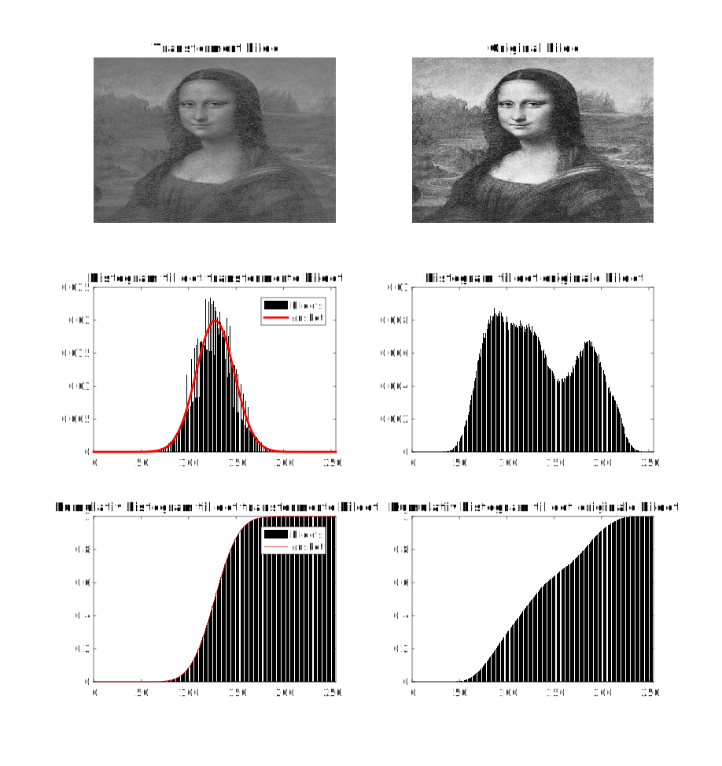
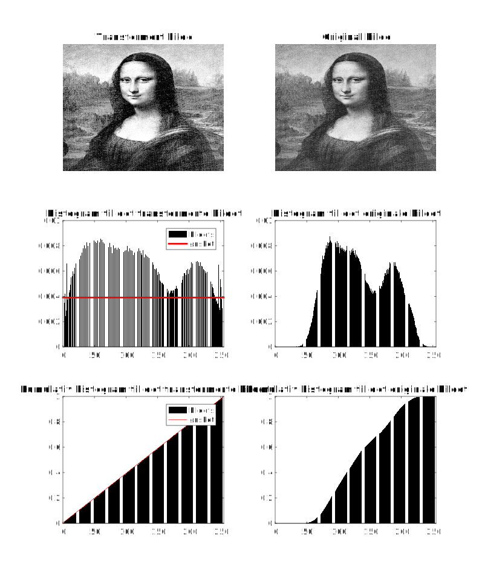

% histogramtilpasning(img,q)
% Histogramtilpasser et innbilde img til et gitt histogram q.
%
% Argumenter:
% * img: Bildet som skal histogramtilpasses.
% * q: Det normaliserte histogrammet img skal tilpasses til.
% Returnerer:
% * img_T: Det histogramtilpassede bildet.
function img_T = histogramtilpasning(img,q)
% Antar 8-bit
G = 256;
% Finn innbildets histogram og deretter dets kumulative histogram:
[~,c] = finn_histogram_bilde(img);
% Finn det kumulative histogrammet til q:
cq = cumsum(q);
% Transformér innbildet img:
T = zeros(1,G);
for i=1:G
[~,argmin] = min(abs(c(i) - cq));
T(i) = argmin-1; % -1 fordi utbildet skal ha verdier mellom 0 og 255.
end
[N,M] = size(img);
img_T = zeros(N,M);
for i=1:N
for j=1:M
img_T(i,j) = T(img(i,j)+1); % +1 fordi img(i,j) er mellom 0 og 255.
% Null er ikke gyldig indeks i Matlab.
end
end
end
Koden kan lastes ned her.
Programmet bruker også en egendefinert funksjon for å finne bildets histogram (finn_histogram_bilde).
Den kan lastes ned her.
Idéen bak algoritmen tatt direkte fra slide 14 i lysarket om histogrambaserte operasjoner.
For å sjekke om programmet faktisk utfører en histogramtilpasning, har det blitt skrevet et eksempelprogram:
G = 256;
intensiteter = linspace(0,G-1,G);
img = imread('mona.png');
gauss = @(x,mu,std) exp(-0.5.*((x-mu)./std).^2)./sqrt(2*pi*std^2);
mu = input('Middelverdi = ');
std_ = input('Standardavvik = ');
q = gauss(intensiteter,mu,std_);
q = q./sum(q);
img_T = histogramtilpasning(img,q);
fprintf('Sum av ønsket histogram: %g\n',sum(q));
fprintf('Middelverdi til transformert bilde: %g\n',mean2(img_T));
fprintf('Standardavvik til transformert bilde: %g\n',std2(img_T));
plot_histogramtransformert(img,img_T,q)
som kan lastes ned her.
Programmet tilpasser et gitt bilde, i dette tilfellet av Mona, til et Gaussisk histogram. Et Gaussisk histogram ble bare valgt som demonstrasjon, men det er fullt mulig å bruke andre former på det ønskede histogrammet.
Etter en kjøring av programmet med middelverdi = 128 og standardavvik = 20, blir resultatet slik:
Figure 1: Mona som har blitt histogramtilpasset en Gauss med middelverdi lik 128 og standardavvik på 20.

Programmet bruker en egen plottefunksjon (plot_histogramtransformert) som kan lastes ned her.
Programmet sjekker også om middelverdien og standardavviket i det transformerte bildet er omtrent lik middelverdien og standardavviket til Gauss-en:
Sum av ønsket histogram: 1
Middelverdi til transformert bilde: 127.768
Standardavvik til transformert bilde: 19.9696
Som en kan se, sjekker den også om det ønskede histogrammet er normalisert - altså summeres opp til én. Dette er en ganske viktig forutsetning for at transformen skal være så god som mulig!
G = 256;
intensiteter = linspace(0,G-1,G);
img = imread('mona.png');
uniform = @(G) ones(1,G)./G;
q = uniform(G);
img_T = histogramtilpasning(img,q);
plot_histogramtransformert(img,img_T,q)
Programmet kan lastes ned her.
Programmet gir dette som resultat:
Figure 2: Bilde av Mona som har blitt histogramutjevnet.

Det også er fullt mulig å løse denne oppgaven ved å direkte spesifisere hva uttrykket for det kumulative histogrammet er til et uniformt histogram. Uttrykket for det kumulative histogrammet vil bli $$ \begin{align*} c(j) &= \frac{T(j)}{G}\\ G \cdot c(j) &= T(j) \end{align*} $$ Dette betyr at den diskrete transformasjonen blir $$ T[j] = \text{round}((G-1)\cdot c[j]) $$ Da er det mulig å implementere dette uttrykket direkte for å finne transformasjonsarray-et til bildet. Dette er beskrevet mer detaljert på slide 8 i lysarket om histogrambaserte operasjoner.